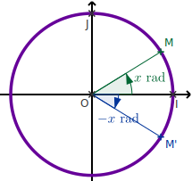
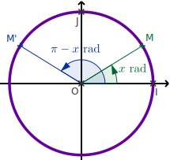
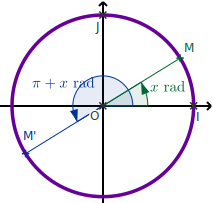
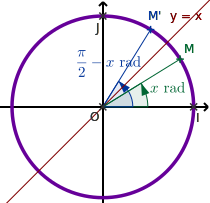
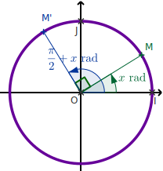
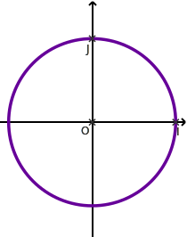

Trigonométrie - 2 -Sinus et cosinus
Sinus et cosinus sur le cercle trigonométrique
\(\sin\alpha\) et \(\cos\alpha\)
\(M\) est un point du cercle trigonométrique correspondant à un réel \(\alpha\) (par la fonction
enroulement vue précédemment).
On note \(\cos\alpha\) l'abscisse de \(M\) et \(\sin\alpha\) l'ordonnée de \(M\) :
On note \(\cos\alpha\) l'abscisse de \(M\) et \(\sin\alpha\) l'ordonnée de \(M\) :
\(M\left(\cos\alpha\,;\,\sin\alpha\right)\)
- On repère un angle orienté \(\alpha\) par rapport à l'axe \((Ox)\), en marquant un point \(M\) sur le cerle trigonométrique ;
- si \(\alpha\) est \(>0\), on tourne dans le sens direct (sens inverse des aiguilles d'une montre ; s'il est \( <0\), on tourne dans le sens indirect ;
- on lit alors les valeurs de \(\cos\alpha\) (sur \((Ox)\)) : c'est l'abscisse de \(M\) ;
- et celle de \(\sin\alpha\) (sur \((Oy)\)) : c'est l'ordonnée de \(M\).
Si l'on considère que \(A=\left(\cos\alpha;0\right)\in\left[OI\right]\), on retrouve dans le
triangle
\(OAM\)
rectangle en \(M\) les définitions de \(\cos\) et de \(\sin\) vues en troisième, à savoir :
\(\cos\alpha=\frac{OA}{OM}\) et \(\sin\alpha=\frac{AM}{OM}\). La nouveauté est la prise en
compte
de
valeurs
négatives pour \(\cos\) et \(\sin\), qui apparaîssent si l'on considère des angles obtus.
Si l'on ajoute \(2\pi\) à \(\alpha\), on fait un tour du cercle et on revient à la même
position,
donc
on
obtient les mêmes valeurs pour \(\cos\) et \(\sin\).
Une fonction \(f\) étant donnée et un réel \(T\) étant fixé, lorsque pour tout \(x\) réel, on
a \(f(x+T)=f(x)\), on dit que \(f\) est \(T\)-périodique (ou périodique de période \(T\)).
Les fonctions \(\cos\) et
\(\sin\)
sont
\(2\pi\)-périodiques ou autrement dit : pour tout \(x\) réel, on a
\(\sin(x+2\pi) = \sin x \) et \(\cos(x+2\pi) = \cos x\).
Propriétés immédiates
Pour \(x\) réel :
- \(-1\leq\cos x \leq 1\) et \(-1\leq \sin x\leq1\) ;
- \(\cos^2 x+\sin^2 x=1\) ;
- \(\cos\) et \(\sin\) sont \(2\pi\)-périodiques.
- La seconde formule se déduit du théorème de Pythagore, et du fait que \(OM^2=1\) ;
- on note, pour plus de lisibilité, \(\cos^2 x=\left(\cos x\right)^2\) (idem pour \(\sin\)).
- Calculer \(\sin^2 t\) sachant que \(\cos t = \frac{1}{4}\).
\(\sin^2 t = 1-\cos^2 t = 1 - \left(\frac{1}{4}\right)^2 = 1-\frac{1}{16}=\frac{15}{16}\)
- Peut-on trouver un réel \(t\) tel que \(\cos t=\frac{1}{4}\) et \(\sin
t=\frac{3}{4}\)
C'est impossible car on aurait :?
\(\cos^2 t + \sin^2 t = \left(\frac{1}{4}\right)^2+\left(\frac{3}{4}\right)^2=\frac{1}{16}+\frac{9}{16}=\frac{5}{8}<1\)
Soit \(t\) un réel tel que \(\cos t =\frac{3}{5}\).
- On suppose que \(t\in\left[0;\frac{\pi}{2}\right]\). Calculer \(\sin t\).
On a \(\sin^2 t = 1-\cos^2 t = 1-\left(\frac{3}{5}\right)^2=1-\frac{9}{25}=\frac{16}{25}\).
Comme \(t\in\left[0;\frac{\pi}{2}\right]\), \(\sin t > 0\), donc : \(\sin t = \sqrt{\frac{16}{25}} = \frac{4}{5}\). - On suppose que \(t\in\left[-\frac{\pi}{2};0\right]\). Calculer \(\sin t\).
On procède de même, mais comme \(t\in\left[-\frac{\pi}{2};0\right]\), alors \(\sin t < 0\), donc \(\sin t = -\sqrt{\frac{16}{25}} = -\frac{4}{5}\).
Valeurs remarquables
Compléter le tableau de valeurs suivant :
| \(\alpha\) (rad) | \(0\) | \(\frac{\pi}{6}\) | \(\frac{\pi}{4}\) | \(\frac{\pi}{3}\) | \(\frac{\pi}{2}\) | \(\pi\) |
|---|---|---|---|---|---|---|
| \(\cos\alpha\) |
1
|
\(\frac{\sqrt{3}}{2}\)
|
\(\frac{\sqrt{2}}{2}\)
|
\(\frac{1}{2}\)
|
0
|
-1
|
| \(\sin\alpha\) |
0
|
\(\frac{1}{2}\)
|
\(\frac{\sqrt{2}}{2}\)
|
\(\frac{\sqrt{3}}{2}\)
|
1
|
0
|
Valeurs associées
Compléter par \(\pm\cos x\) et \(\pm\sin x\) les égalités suivantes :
| Symétrie / \((Ox)\) | Symétrie / \((Oy)\) | Symétrie / \(O\) | Symétrie / \(y=x\) | Rotation90° / \(O\) |
|---|---|---|---|---|
|  |  |  |  |  |
| \(\cos\left(-x\right)=\) \(\cos(x)\)
|
\(\cos\left(\pi-x\right)=\) \(-\cos(x)\)
|
\(\cos\left(\pi+x\right)=\) \(-\cos(x)\)
|
\(\cos\left(\frac{\pi}{2}-x\right)=\) \(\sin(x)\)
|
\(\cos\left(\frac{\pi}{2}+x\right)=\) \(-\sin(x)\)
|
| \(\sin\left(-x\right)=\) \(-\sin(x)\)
|
\(\sin\left(\pi-x\right)=\) \(\sin(x)\)
|
\(\sin\left(\pi+x\right)=\) \(-\sin(x)\)
|
\(\sin\left(\frac{\pi}{2}-x\right)=\) \(\cos(x)\)
|
\(\sin\left(\frac{\pi}{2}+x\right)=\) \(\cos(x)\)
|
Compléter le tableau de valeurs suivant :
| \(\alpha\) (rad) | \(a=\frac{-\pi}{6}\) | \(b=\frac{3\pi}{4}\) | \(c=\frac{-2\pi}{3}\) | \(d=\frac{3\pi}{2}\) | \(e=-\pi\) |
|---|---|---|---|---|---|
| \(\cos\alpha\) |
\(\frac{\sqrt{3}}{2}\)
|
\(\frac{-\sqrt{2}}{2}\)
|
\(\frac{-1}{2}\)
|
0
|
-1
|
| \(\sin\alpha\) |
\(\frac{-1}{2}\)
|
\(\frac{\sqrt{2}}{2}\)
|
\(\frac{-\sqrt{3}}{2}\)
|
-1
|
0
|
Simplifier les expressions suivantes :
- \(A=2\cos\left(\frac{\pi}{2}-x\right)+\sin(\pi+x)-3\sin(\pi-x)\)
\(A=\sin(x)-\sin(x)-3\sin(x)=-3\sin(x)\)
- \(B=\cos^2\left(\frac{\pi}{2}-x\right)+\sin^2(\pi+x)+2\cos^2(\pi+x)\)
\( \begin{eqnarray} B&=&\sin^2(x)+\left(-\sin(x)\right)^2+2\left(-\cos(x)\right)^2\\ &=&\sin^2(x)+\sin^2(x)+2\cos^2(x)\\ &=& 2\left(\cos^2(x)+\sin^2(x)\right)=2\\ \end{eqnarray} \)

Coordonnées polaires
Dans un repère orthonormé, on note \(M\) un point du plan distinct de l'origine
\(O\).
Tout point \(M\) distinct de l'origine \(O\) peut être repéré par un couple de réels \(\left(r;\alpha\right)_{\textrm{pol}}\), avec :
Tout point \(M\) distinct de l'origine \(O\) peut être repéré par un couple de réels \(\left(r;\alpha\right)_{\textrm{pol}}\), avec :
- \(r=OM>0\) (distance à l'origine) ; unique ;
- \(\alpha\equiv\widehat{\left(\overrightarrow{OI};\overrightarrow{OM}\right)}\) (angle par rapport à l'axe des abscisses) ; unique modulo \(2\pi\).
Le couple noté \(\left(r;\alpha\right)_{\textrm{pol}}\) est appelé
coordonnées polaires et le couple \((x;y)\) est appelé
coordonnées cartésiennes
du point \(M\) dans le repère orthonormé \((O;I;J)\).
On a alors :
\(\displaystyle\left\{\begin{array}{l}
x=r\cos\alpha\\
y=r\sin\alpha\\
\end{array}\right.
\Leftrightarrow
\left\{\begin{array}{l}
r=\sqrt{x^2+y^2}\\
\cos\alpha=\dfrac{x}{r}\\
\sin\alpha=\dfrac{y}{r}\\
\end{array}\right.
\)
- Donner les coordonnées cartésiennes de \(A\left(3;\frac{-5\pi}{6}\right)_{\textrm{pol}}\).
\(\displaystyle\left\{\begin{array}{l} x=r\cos\alpha=3\cos\left(\frac{-5\pi}{6}\right)=\frac{-3\sqrt{3}}{2}\\ y=r\sin\alpha=3\sin\left(\frac{-5\pi}{6}\right)=\frac{-3}{2}\\ \end{array}\right.\) donc \(A\left(\frac{-3\sqrt{3}}{2};\frac{-3}{2}\right)\)
- Déterminer les coordonnées polaires de \(B\left(2;-2\sqrt{3}\right)\).
On calcule \(r=\sqrt{x^2+y^2}=\sqrt{2^2+\left(-2\sqrt{3}\right)^2}=\sqrt{4+12}=\sqrt{16}=4\) .
Puis \( \left\{\begin{array}{l} \cos\alpha=\dfrac{x}{r}=\frac{2}{4}=\frac{1}{2}\\ \sin\alpha=\dfrac{y}{r}=\dfrac{-2\sqrt{3}}{4}=\frac{-\sqrt{3}}{2}\\ \end{array}\right. \) D'où (faire un croquis avec le cercle trigo) \(\alpha=\frac{-\pi}{3}\). Donc \(B\left(4;\frac{-\pi}{3}\right)_{\textrm{pol}}\)
Est-il possible qu'un point ait les mêmes coordonnées cartésiennes et polaires ?
On aurait \((x;y)=\left(r;\alpha\right)_{\textrm{pol}}\), donc comme \(r>0\), \(x>0\), donc
l'égalité \(x=r\cos\alpha\) entraine \(x=x\cos\alpha\) et en simplifiant par \(x\neq 0\),
\(\cos\alpha
= 1\), donc \(\alpha\equiv 0 \pmod{2\pi}\) et donc \(y=\sin\alpha=0\). Donc les points ayant les
mêmes coordonnées polaires et cartésiennes sont les \((x;y)\) avec \(x>0\) et \(y=0\), soit la
partie positive (privée de l'origine) de l'axe \((Ox)\).
Projections orthogonales
Vecteur unitaires et rappels
- Un vecteur \(\overrightarrow{u}\) représente un déplacement (en ligne droite) d'un point \(A\) vers un point \(B\). On note \(\overrightarrow{u}=\overrightarrow{AB}\) le vecteur donnant le déplacement de \(A\) vers \(B\).
- Ses coordonnées \({x_\vec{u}}\choose{y_\vec{u}}\) représentent le déplacement horizontal \(x_\vec{u}=x_B-x_A\) et le déplacement vertical \(y_\vec{u}=y_B-y_A\) lors de ce trajet de \(A\) vers \(B\).
- Dans un repère orthonormé, sa norme, notée \(||\overrightarrow{u}||\) est la distance \(AB\). La formule de Pythagore permet de la calculer \(||\overrightarrow{u}|| = AB = \sqrt{\left(x_B-x_A\right)^2+\left(y_B-y_A\right)^2}\)
- Un vecteur normé est un vecteur de norme 1.
Pour normer un vecteur, il suffit de le diviser par sa norme.
Déterminer les coordonnées et calculer les normes des vecteurs \(\overrightarrow{u}\) et
\(\overrightarrow{v}\). Normer ces deux vecteurs.
\(\overrightarrow{u}{{6-2}\choose{4-1}} = {{4}\choose{3}}\) et
\(\overrightarrow{v}{{6-(-2)}\choose{-2-1}} = {{8}\choose{-3}}\).
Ainsi \(||\overrightarrow{u}||=\sqrt{4^2+3^2}=\sqrt{25}=5\) et \(||\overrightarrow{v}||=\sqrt{8^2+(-3)^2}=\sqrt{73}\)
d'où \(\dfrac{\overrightarrow{u}}{||\overrightarrow{u}||}={{\frac{4}{5}}\choose{\frac{3}{5}}}={{0{,}8}\choose{0{,}6}}\) et \(\dfrac{\overrightarrow{v}}{||\overrightarrow{v}||}={{\frac{8}{\sqrt{73}}}\choose{\frac{-3}{\sqrt{73}}}}\approx{{0{,}94}\choose{-0{,}35}}\)
Ainsi \(||\overrightarrow{u}||=\sqrt{4^2+3^2}=\sqrt{25}=5\) et \(||\overrightarrow{v}||=\sqrt{8^2+(-3)^2}=\sqrt{73}\)
d'où \(\dfrac{\overrightarrow{u}}{||\overrightarrow{u}||}={{\frac{4}{5}}\choose{\frac{3}{5}}}={{0{,}8}\choose{0{,}6}}\) et \(\dfrac{\overrightarrow{v}}{||\overrightarrow{v}||}={{\frac{8}{\sqrt{73}}}\choose{\frac{-3}{\sqrt{73}}}}\approx{{0{,}94}\choose{-0{,}35}}\)
Définition
\(\overrightarrow{F}\) est un vecteur, et \((d)\) une droite dirigée par un vecteur
\(\overrightarrow{u}\) normé.
On appelle projeté othogonal de \(\overrightarrow{F}\) sur \((d)\) (on peut aussi dire sur \(\overrightarrow{u}\), seule la direction importe) le vecteur \(\overrightarrow{F}_d\) défini par : \(\overrightarrow{F}_d=||\overrightarrow{F}||\cos(\alpha)\,\overrightarrow{u}\)
On appelle projeté othogonal de \(\overrightarrow{F}\) sur \((d)\) (on peut aussi dire sur \(\overrightarrow{u}\), seule la direction importe) le vecteur \(\overrightarrow{F}_d\) défini par : \(\overrightarrow{F}_d=||\overrightarrow{F}||\cos(\alpha)\,\overrightarrow{u}\)
Tout vecteur dont l'origine et l'extrémité sont placées sur les mêmes droites
perpendiculaires à \((d)\) que \(\overrightarrow{F}\) a même projeté orthogonal que
\(\overrightarrow{F}\)
sur \((d)\).
Dessiner un vecteur \(\overrightarrow{F}_1\) ayant même projeté orthogonal sur \((d)\) que
\(\overrightarrow{F}\).
Tout vecteur dont le départ est sur la ligne pointillée perpendiculaire à \((d)\) la plus à gauche et
dont l'arrivée est sur la ligne pointillée perpendiculaire à \((d)\) la plus à droite convient.
\(\overrightarrow{w}\), de norme 3, fait un angle de
\(\frac{-\pi}{3}\) avec la droite
\(d\) dirigée par \(\overrightarrow{v}{3\choose4}\).
Calculer les coordonnées de \(\overrightarrow{w_d}\) . Attention : \(\overrightarrow{v}\) n'est pas normé.
Calculer les coordonnées de \(\overrightarrow{w_d}\) . Attention : \(\overrightarrow{v}\) n'est pas normé.
- Normons \(\overrightarrow{v}\) : \(||\overrightarrow{v}||=\sqrt{3^2+4^2}=5\) donc \(\dfrac{\overrightarrow{v}}{||\overrightarrow{v}||}={{\frac{3}{5}}\choose{\frac{4}{5}}}={{0{,}6}\choose{0{,}8}}\).
- Calculons \(||\overrightarrow{w}||\cos\frac{-\pi}{3}= 3 \times \frac{1}{2} = \frac{3}{2}\)
- On a ainsi \(\overrightarrow{w_d} = ||\overrightarrow{w}||\cos\alpha \dfrac{\overrightarrow{v}}{||\overrightarrow{v}||} = \frac{3}{2} {{0{,}6}\choose{0{,}8}} = {{0{,}9}\choose{1{,}2}}\)
Sur les axes
On se place dans un repère orthonormé
\(\left(O;\overrightarrow{i};\overrightarrow{j}\right)\).
Toutes les lignes de rappel sont parallèles ou perpendiculaires aux axes. Le vecteur
\(\overrightarrow{F}\)
fait un angle
\(\alpha\) avec l'axe \((Ox)\). On obtient :
- Le projeté othogonal de \(\overrightarrow{F}\) sur \((Ox)\) le vecteur \(\overrightarrow{F_x}=F_x\overrightarrow{i}\) avec : \(F_x=||\overrightarrow{F}||\cos\alpha\).
- Le projeté othogonal de \(\overrightarrow{F}\) sur \((Oy)\) le vecteur \(\overrightarrow{F_y}=F_y\overrightarrow{j}\) avec : \(F_y=||\overrightarrow{F}||\sin\alpha\).
- Les coordonnées de \(\overrightarrow{F}\) : \( {{F_x}\choose{F_y}} =\left(\begin{array}{c} ||\overrightarrow{F}||\cos\alpha \\ ||\overrightarrow{F}||\sin\alpha \end{array}\right) =||\overrightarrow{F}|| \left(\begin{array}{c} \cos\alpha \\ \sin\alpha \end{array}\right) \)
Un vecteur \(\overrightarrow{F}\), de norme 10, représentant une force, fait un angle de -60°
avec l'horizontale.
Déterminer les valeurs arrondies au dixième des coordonnées \({{F_x}\choose{F_y}}\).
Déterminer les valeurs arrondies au dixième des coordonnées \({{F_x}\choose{F_y}}\).
- \(F_x=||\overrightarrow{F}||\cos\alpha=10\cos(-60^\circ)=10\times\frac{1}{2}=5\)
- \(F_y=||\overrightarrow{F}||\sin\alpha=10\sin(-60^\circ)=10\times\frac{-\sqrt{3}}{2}=-5\sqrt{3}\approx 8{,}7\)
(In)Équations trigonométriques
Équation \(\cos x=k\) avec \(k\in\mathbb{R}\)
- Si \(k<-1\) ou bien si \(k>1\), l'équation \(\cos x = k\) n'a pas de solution ;
- si \(k\in[-1;1]\), alors \(\cos x = k\) a une infinité de solutions dans \(\mathbb{R}\), qui correspondent à une ou deux solutions modulo \(2\pi\).
- On place \(k\) sur l'axe (Ox) (correspondant à \(\cos\)) ;
- on recherche les deux angles \(\alpha\) et \(-\alpha\) tels que \(\cos \alpha=k\) ;
on peut utiliser \(\alpha=\arccos k\) noté aussi \(\cos^{-1} k\) ; - on a alors : \(\cos x = k ~~~\Leftrightarrow~~~ x\equiv\alpha~~(2\pi)\textrm{ ou }x\equiv-\alpha~~(2\pi)\)
Résoudre \(\cos x=\frac{1}{2}\).
\(\cos x=\frac{1}{2} \Leftrightarrow x\equiv\frac{\pi}{3}\pmod{2\pi}\textrm{ ou
}x\equiv\frac{-\pi}{3}\pmod{2\pi}\)
Équation \(\sin x=k\) avec \(k\in\mathbb{R}\)
- Si \(k<-1\) ou bien si \(k>1\), l'équation \(\sin x = k\) n'a pas de solution ;
- si \(k\in[-1;1]\), alors \(\sin x = k\) a une infinité de solutions dans \(\mathbb{R}\), qui correspondent à une ou deux solutions modulo \(2\pi\).
- On place \(k\) sur l'axe (Oy) (correspondant à \(\sin\)) ;
- on recherche les deux angles \(\alpha\) et \(\pi-\alpha\) tels que \(\sin
\alpha=k\) ;
on peut utiliser \(\alpha=\arcsin k\) noté aussi \(\sin^{-1} k\) ;
- on a alors : \(\sin x = k ~~~\Leftrightarrow ~~~ x\equiv\alpha~~(2\pi)\textrm{ ou }x\equiv\pi-\alpha~~(2\pi)\)
Résoudre \(\sin x=\frac{1}{2}\).
\(\cos x=\frac{1}{2} \Leftrightarrow x\equiv\frac{\pi}{6}\pmod{2\pi}\textrm{ ou
}x\equiv\pi-\frac{\pi}{6}\equiv\frac{5\pi}{6}\pmod{2\pi}\)
Attention à ne pas se tromper d'axe en plaçant \(k\) !
Résoudre les équations trigonométriques suivantes
- \(3\sin x -5=0\)
- \(\sin^2 x=2\)
- \(\sqrt{2}+2\cos x =0\)
- \(\sin\left(x+\frac{\pi}{4}\right)=\frac{1}{2}\)
- \(2\sin 2x=1\)
- \(\cos\frac{x}{2}=\frac{-\sqrt{2}}{2}\)
- \(4\sin^2 x-3=0\)
- \(2\cos^2 x=1\)
- \(\sin 3x= \cos 2x\)
- \(\cos^2x=\sin^2 2x\)
Isoler les sinus ou les cosinus pour résoudre. Faire le schéma ! On rappelle que l'équation
\(X^2=k>0\) a deux solutions : \(-\sqrt{k}\) ou \(\sqrt{k}\).
Solutions :
Solutions :
- \(3\sin x -5=0 \Leftrightarrow \sin=\frac{5}{3}>1\) donc pas de solution.
- \(\sin^2 x=2 \Leftrightarrow \sin x = \sqrt{2}>1\textrm{ ou }\sin x = -\sqrt{2}<-1\) donc pas de solutions.
- \(\sqrt{2}+2\cos x =0 \Leftrightarrow \cos x = \frac{\sqrt{2}}{2}\) \(\Leftrightarrow x \equiv \frac{\pi}{4} \textrm{ ou } x\equiv \frac{-\pi}{4} \pmod{2\pi}\)
- \(\sin\left(x+\frac{\pi}{4}\right)=\frac{1}{2}\)
- \(2\sin 2x=1 \Leftrightarrow \sin 2x = \frac{1}{2}\) \(\Leftrightarrow 2x \equiv \frac{\pi}{6} \pmod{2\pi} \textrm{ ou } 2x \equiv \frac{5\pi}{6} \pmod{2\pi}\) \(\Leftrightarrow x \equiv \frac{\pi}{12} \pmod{\pi} \textrm{ ou } x \equiv \frac{5\pi}{12} \pmod{\pi}\)
- \(\cos\frac{x}{2}=\frac{-\sqrt{2}}{2} \Leftrightarrow \frac{x}{2} \equiv \frac{3\pi}{4} \pmod{2\pi} \textrm{ ou } \frac{x}{2} \equiv \frac{-3\pi}{4} \pmod{2\pi}\) \(\Leftrightarrow x \equiv \frac{3\pi}{2} \pmod{4\pi} \textrm{ ou } x \equiv \frac{-3\pi}{2} \pmod{4\pi} \)
- \(4\sin^2 x-3=0 \Leftrightarrow \sin x =\frac{\sqrt{3}}{2} \textrm{ ou }\sin x =\frac{-\sqrt{3}}{2}\) \(\Leftrightarrow x \equiv \frac{\pi}{3} \pmod{2\pi} \textrm{ ou } x \equiv \frac{2\pi}{3} \pmod{2\pi} \textrm{ ou } x \equiv \frac{-\pi}{3} \pmod{2\pi} \textrm{ ou } x \equiv \frac{-2\pi}{3} \pmod{2\pi} \)
- \(2\cos^2 x=1 \Leftrightarrow \cos x =\frac{\sqrt{2}}{2} \textrm{ ou }\cos x =\frac{-\sqrt{2}}{2}\) \(\Leftrightarrow x \equiv \frac{\pi}{4} \pmod{2\pi} \textrm{ ou } x \equiv \frac{-\pi}{4} \pmod{2\pi} \textrm{ ou } x \equiv \frac{3\pi}{4} \pmod{2\pi} \textrm{ ou } x \equiv \frac{-3\pi}{4} \pmod{2\pi} \)
- \(\sin 3x= \cos 2x \Leftrightarrow \sin 3x = \sin\left(\frac{\pi}{2}-2x\right)\) \(\Leftrightarrow 3x \equiv \frac{\pi}{2}-2x \pmod{2\pi} \textrm{ ou } 3x \equiv \pi-\left(\frac{\pi}{2}-2x\right) \pmod{2\pi} \) \(\Leftrightarrow 5x \equiv \frac{\pi}{2} \pmod{2\pi} \textrm{ ou } x \equiv \frac{\pi}{2} \pmod{2\pi} \) \(\Leftrightarrow x \equiv \frac{\pi}{10} \pmod{\frac{2\pi}{5}} \textrm{ ou } x \equiv \frac{\pi}{2} \pmod{2\pi} \)
- \(\cos^2x=-\sin^2 2x \Leftrightarrow 1=\cos^2x+\sin^2 2x =0 \) : pas de solutions.
Déterminer l'angle que fait le vecteur \(\sqrt{2}{{2}\choose{-2}}\) avec l'axe horizontal.
Réponse : \(\frac{-\pi}{4}\).
Inéquations
On adapte ces méthodes aux inéquations trigonométriques facilement.
Résoudre \(\cos x \leq \dfrac{1}{2}\) et \(\sin x >
\dfrac{\sqrt{3}}{2}\).
- \(\cos x \leq \dfrac{1}{2} \Leftrightarrow \frac{\pi}{3}\leqslant x \leqslant \frac{5\pi}{3} \pmod{2\pi}\)
- \(\sin x > \dfrac{\sqrt{3}}{2} \Leftrightarrow \frac{\pi}{3}< x < \frac{2\pi}{3} \pmod{2\pi} \)